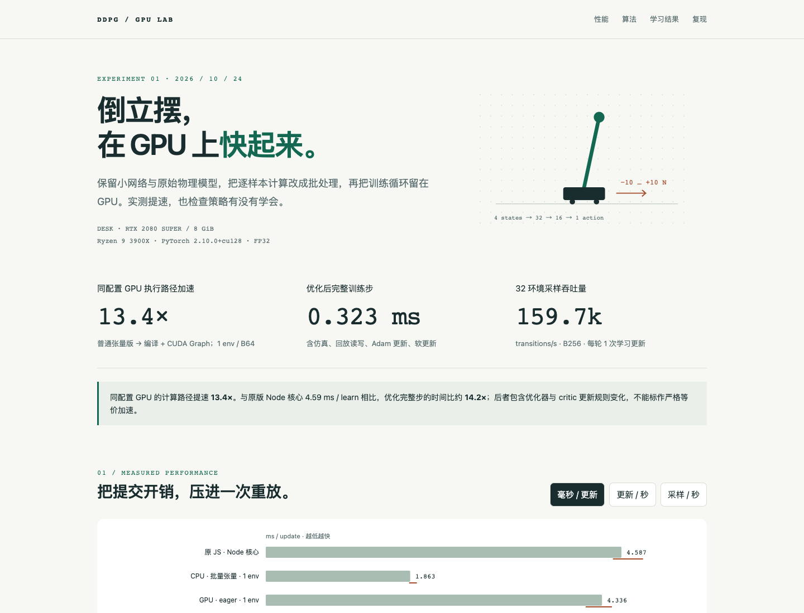
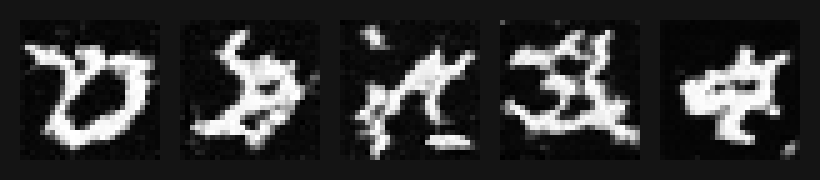
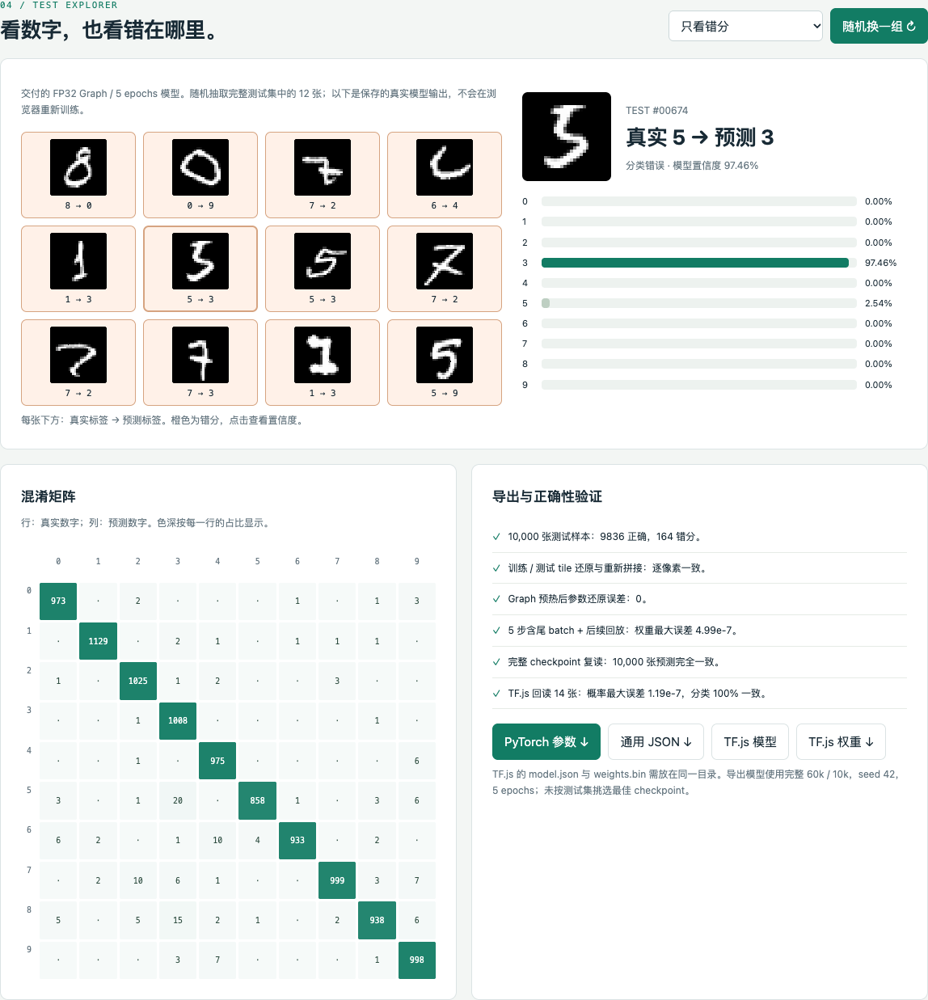
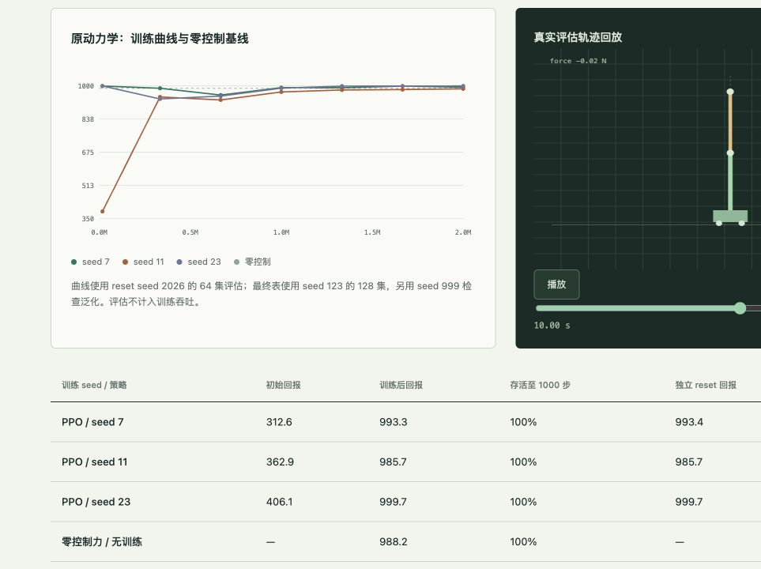

Reinforcement learning
01 / 05
倒立摆，在 GPU 上快起来。
保留小网络与原始物理模型，把样本计算改成批处理，再将完整训练循环留在 GPU 上。
13.4×同配置 GPU 执行路径加速
每张卡片直达完整中文报告；报告均为自包含页面，保留测量方法、限制与可复现命令。

保留小网络与原始物理模型，把样本计算改成批处理，再将完整训练循环留在 GPU 上。

对照 FP32、AMP 与 CUDA Graph 的训练和采样路径，并检查精度与生成质量。
只计算单颗高斯的增量并复用缓存；附 CPU 交互演示、WebGPU 实验与 CUDA 原型。

完整数据上比较 eager、CUDA Graph 与 AMP，并核对 PyTorch 和 TF.js 导出。

从浏览器 JS 到 GPU PPO；V2 重整 rollout、critic 批评估与融合 Adam，并验证策略质量。